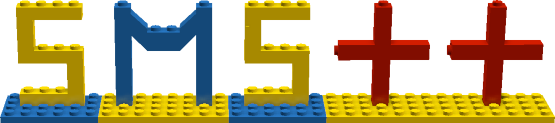

|
SMS++ Project
0.1
Structured Modeling System - the whole bunch
|
|
SMS++ Project
0.1
Structured Modeling System - the whole bunch
|

This is a the splash page of the documentation of the "core" SMS++, a set of C++ classes intended to provide a system for modeling complex, block-structured mathematical models (in particular, but not exclusively, single-real-objective optimization problems), and solving them via sophisticated, structure-exploiting algorithms (in praticular, but not exclusively, decomposition approaches and structured Interior-Point methods).
Current systems for modeling mathematical models typically falls into two opposite approaches:
SMS++ tries a different approach, somehow extending the latter one but even more deeply rooted in programming languages (after all, mathematical optimization used to be known as "mathematical programming" for a good reason). It is a modeling system based on a set of C++ classes, where a model is represented as a "block", containing some collections of "variables" and "constraints", plus one "objective function", possibly organized (recursively) into sub-blocks. The current distribution provides the corresponding abstract Block, Variable, Constraint and Objective classes, that try to establish the minimal possible interface of such a modeling system. In particular, Variable, Constraint and Objective make as little assumptions as possible on the actual form of the corresponding mathematical objects. However, a RealObjective class is already derived from Objective in order to al least define the crucial concept of an objective function with real values.
A first level of specification is then provided by the derived classes ColVariable (a single real Variable, possibly with integrality restrictions), and RowConstraint (a Constraint of the form "LHS <= ( single real expression ) <= RHS"). Also, a general Function class is provided for expressing a very general real-valued function concept, together with its derived C05Function (providing linearizations, i.e., first-order information, but not necessarily continuous one) and C15Function (providing quadratic models, i.e., second-order information, but not necessarily continuous one). With this, FRowConstraint and FRealObjective are defined as RowConstraint and RealObjective taking a generic Function to implement them. Some basic aspects of the interface of Constraint, Objective and Function are factored out in the abstract ThinVarDepInterface class, and some other aspects are factored out in the different abstract ThinComputeInterface class.
Then, to get to actual concrete objects one only have to define actual Function; currently what is provided is LinearFunction, which then allows to represent the all-important class of Mixed-Integer Linear Problems. Other concrete functions can be easily defined. Also, the (abstract) class OneVarConstraint is separately defined for RowConstraint depending on only one variable (and which therefore don't really need a Function), from of which BoxConstraint and some specialized versions (like NNConstraint and NPConstraint for non-negativity and non-positivity Constraint, respectively) are derived.
The system is completed by Solver, an abstract base class setting the general interface between a Block representing a mathematical model and any algorithm designed to solve (i.e., produce solutions for) it, together with a slightly specialized derived CDASolver aimed at solution algorithms that exploit convex structures (and, in particular, duality) in the model. Solver also share the ThinComputeInterface interface, which defines how a (potentially) computationally demanding task is to be executed, and how (potentially, many) parameters controlling it can be provided. The latter is done via a ComputeConfiguration object, deriving from the general Configuration class intended to represent objects for collecting many (structured) algorithmic parameters. The class is also the basis for BlockConfiguration (collecting parameters for different tasks that a Block has to accomplish), and BlockSolverConfiguration (collecting parameters for all the Solver attached to a Block and its sub-Block, recursively). Configuration also offers a factory (to which derived classes have to explicitly register, say using the provided macros).
The idea is that Solver will be specialized for specifically-structured mathematical models, corresponding to specific derived classes of Block using specific forms of Variable, Constraint and Objective. Block is meant to represent the general concept of "a part of a mathematical model with a well-understood identity"; that is, derived classes will each represent a model with a specific structure (say, a Knapsack, a Traveling Salesman Problem, a SemiDefinite program, ...). Hence, specialized Solver will be able to exploit this semantically defined structure (the "physical representation" of the Block) to provide faster and more effective solution methods, possibly without ever using the "abstract representation" of the Block in terms of its Variable, Constraint and Objective. Solver can be attached to individual sub-Blocks of a larger, composed Block (recursively), easing the implementation of solution algorithms based on advanced techniques (like decomposition ones). However, each specialized Block will always be able to provide an "abstract representation" of the Block in terms of its Variable, Constraint and Objective, in order to be able to implement solution methods that mix general-purpose Solver for large classes of mathematical models (say, Mixed-Integer Linear Programs) and ad-hoc Solver for very specific structures. BlockSolverConfiguration is specifically constructed to support the notion that "a Solver for a Block" can actually be a large collection of Solver attached to the Block and its sub-Block (recursively). In order to allow the Solver to be automatically created and attached to their Block via a BlockSolverConfiguration, Solver offers a factory (to which derived classes have to explicitly register, say using the provided macros).
SMS++ currently supports the following general mechanisms:
SMS++ currently does not support a number of important aspects, such as asynchronous execution of the computationally heavy parts (see ThinComputeInterface). However, it is hopefully structured in such a way that these aspects can be added later with relatively minimal disruption of the current interface.
The code is currently provided free of charge for academic purposes only. As such, it is provided "as is", without any explicit or implicit warranty that it will properly behave or it will suit your needs. The Authors of the code cannot be considered liable, either directly or indirectly, for any damage or loss that anybody could suffer for having used it. More details about the non-warranty attached to this code are available in the license description file.
This code is provided free of charge for academic purposes under the "academic license": see the file doc/academicl.txt for further details. Because the code is currently in the early stages of its development we prefer a stricter licensing regime w.r.t. LGPL in order to discourage too early fragmentation of the code. Thus, you can make changes, but we strongly suggest that you do not distribute any modified version (although you are legally allowed to within the terms of the license) without prior agreement with the original developers; if your changes make good sense, please allow us to incorporate them in the standard release. Yet, it is foreseen that the license will be moved to LGPL as soon as the code is deemed stable enough to be widely distributed.
Antonio Frangioni Operations Research Group Dipartimento di Informatica Universita' di Pisa Rafael Durbano Lobato Department of Applied Mathematics State University of Campinas, Brazil
Kostas Tavlaridis-Gyparakis Operations Research Group Dipartimento di Informatica Universita' di Pisa Utz-Uwe Haus Cray EMEA Research Lab
 1.8.14
1.8.14